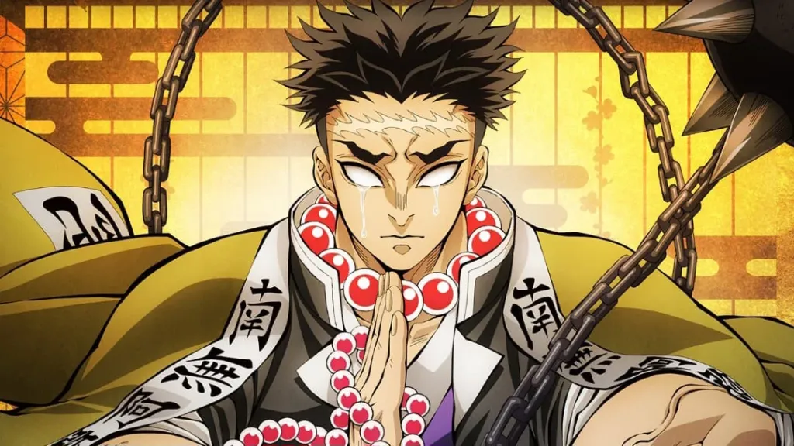
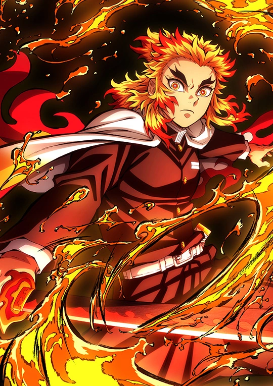
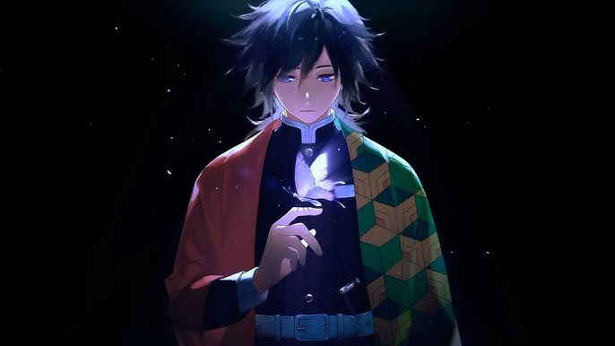

Some of the greatest Demon Slayers

The most powerful Demon Slayer to have ever existed. Creator of the first ever Breathing Styles - Sun Breathing

The srongest Demon Slayer of the current era. Weilder of Stone Breathing.Gyomei uses a spiked flail and axe reminiscent of a Kusarigama

Kyojuro is his generation's most skilled Flame Breathing user. One of the most powerful and skilled swordsmen in the entire organization.

The current Water Hashira of the Demon Slayer Corps. Creator of the Water Breathing's Eleventh form: Dead Calm
"No matter how devastated you may be by your own weakness or uselessness set your heart ablaze." - Kyojiro Rengoku
- Rengoku Kyojuro, The Flame Hashira
Join Us